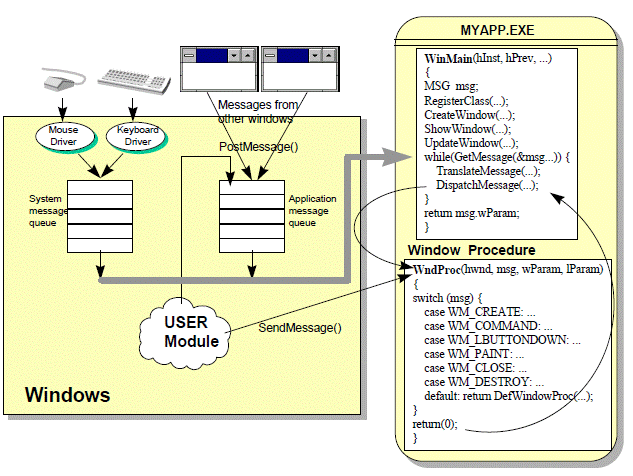

Windows程序的窗口和消息 -- 一个Windows程序从生到死
1.一个完整的Windows程序
#include <windows.h>
#include <mmsystem.h>
#pragma comment(lib,"winmm.lib")
//Windows项目要使用Windows子系统, 而不是Console, 可以这样设置:
//[Project] --> [Settings] --> 选择"Link"属性页,
//在Project Options中将/subsystem:console改成/subsystem:windows
LRESULT CALLBACK WndProc(HWND, UINT, WPARAM, LPARAM);
int WINAPI WinMain(HINSTANCE hInstance, HINSTANCE hPrevInstance, PSTR szCmdLine, int iCmdShow)
{
static TCHAR szAppName[] = TEXT("HelloWin32");
HWND hwnd;
MSG msg;
WNDCLASS wndclass;
wndclass.style = CS_HREDRAW | CS_VREDRAW;
wndclass.lpfnWndProc = WndProc;
wndclass.cbClsExtra = 0;
wndclass.cbWndExtra = 0;
wndclass.hInstance = hInstance;
wndclass.hIcon = LoadIcon(NULL, IDI_APPLICATION);
wndclass.hCursor = LoadCursor(NULL, IDC_ARROW);
wndclass.hbrBackground = (HBRUSH)GetStockObject(WHITE_BRUSH);
wndclass.lpszMenuName = NULL;
wndclass.lpszClassName = szAppName;
if (!RegisterClass(&wndclass))
{
MessageBox(NULL, TEXT("This program requires windows NT!"), szAppName, MB_ICONERROR);
return 0;
}
hwnd = CreateWindow(szAppName, // window class name
TEXT("The Hello Program"), // window caption
WS_OVERLAPPEDWINDOW, // window style
CW_USEDEFAULT, // initial x position
CW_USEDEFAULT, // initial y position
CW_USEDEFAULT, // initial x size
CW_USEDEFAULT, // initial y size
NULL, // parent window handle
NULL, // window menu handle
hInstance, // program instance handle
NULL); // creation parameters
ShowWindow(hwnd, iCmdShow);
UpdateWindow(hwnd);
while (GetMessage(&msg, NULL, 0, 0))
{
TranslateMessage(&msg);
DispatchMessage(&msg);
}
return msg.wParam;
}
LRESULT CALLBACK WndProc(HWND hwnd, UINT message, WPARAM wParam, LPARAM lParam)
{
HDC hdc;
PAINTSTRUCT ps;
RECT rect;
switch (message)
{
case WM_CREATE:
PlaySound(TEXT("hellowin32.wav"), NULL, SND_FILENAME | SND_ASYNC);
return 0;
case WM_PAINT:
hdc = BeginPaint(hwnd, &ps);
GetClientRect(hwnd, &rect);
DrawText(hdc, TEXT("Hello Windows 7!"), -1, &rect, DT_SINGLELINE | DT_CENTER | DT_VCENTER);
EndPaint(hwnd, &ps);
return 0;
case WM_DESTROY:
PostQuitMessage(0);
return 0;
}
return DefWindowProc(hwnd, message, wParam, lParam);
}
运行效果：

要创建窗口，首先需要注册一个窗口类，而窗口类又需要窗口过程来处理窗口消息。
窗口总是基于窗口类来创建的。窗口类确定了处理窗口消息的窗口过程。多个窗口可以同时基于某一窗口类来创建。
typedef struct {
UINT style;
WNDPROC lpfnWndProc;
int cbClsExtra;
int cbWndExtra;
HINSTANCE hInstance;
HICON hIcon;
HCURSOR hCursor;
HBRUSH hbrBackground;
LPCTSTR lpszMenuName;
LPCTSTR lpszClassName;
} WNDCLASS, *PWNDCLASS;
ATOM RegisterClass(CONST WNDCLASS *lpWndClass);
过程：定义一个WNDCLASS结构并对它的10个子段进行初始化，并调用RegisterClass来完成该窗口类的注册。
通过调用CreateWindow来完成。
HWND CreateWindow(LPCTSTR lpClassName, // 窗口类名称
LPCTSTR lpWindowName, // 窗口标题
DWORD dwStyle, // 窗口风格，或称窗口格式
int x, // 初始x坐标
int y, // 初始y坐标
int nWidth, // 初始x方向尺寸
int nHeight, // 初始y方向尺寸
HWND hWndParent, // 父窗口句柄
HMENU hMenu, // 窗口菜单句柄
HINSTANCE hInstance, // 程序实例句柄
LPVOID lpParam // 创建参数
);
句柄：Windows中，句柄的使用非常频繁。句柄本质上是引用某个对象的数值。Windows中的句柄非常类似于传统的C或MS-DOS程序中使用的文件句柄。
如果新建的窗口为顶级窗口，则父窗口句柄为NULL。
CreateWindow的返回值为一个指向所创建窗口的句柄。
CreateWindow调用返回时，窗口已在Windows内部被创建。这表示Windows已经分配了一块内存来保存指定的窗口信息以及一些其他信息。
要将窗口显示在屏幕上，还需要：
1）ShowWindow(hwnd, iCmdShow);
用于将窗口显示在屏幕中。如果第二个参数为SW_SHOWNORMAL，则该窗口的客户区将被在窗口类中所指定的背景画刷擦除。
2）UpdateWindow(hwnd);
通过向窗口过程发送一条WM_PAINT消息，使窗口客户区重绘。
在UpdateWindow被调用之后，新建窗口在屏幕中便完全可见了。此时，该程序必须能够接收来自用户的键盘输入和鼠标输入。Windows为当前在其中运行的每一个Windows程序都维护一个消息队列。当输入事件发生后，Windows会自动将这些事件转换为消息，并将其放置在应用程序的消息队列中。
应用程序通过执行一段名为“消息循环”的代码段来从消息队列中获取消息：
while (GetMessage(&msg, NULL, 0, 0))
{
TranslateMessage(&msg);
DispatchMessage(&msg);
}
GetMessage用于从消息队列中对消息进行检索。若消息为WM_QUIT，则返回0值，while循环退出。
TranslateMessage将msg结构返还给Windows以进行某些键盘消息的转换。
DispatchMessage将msg再次返回给Windows，Windows会将这条消息发送给合适的窗口过程来处理。即Windows调用了窗口过程。
前面的都是常规步骤。真正有意义的事情发生在窗口过程中。正是窗口过程决定了窗口客户区的显示内容以及窗口如何对用户的输入做出响应。
应用程序通常并不直接对窗口过程进行调用。窗口过程几乎总是由Windows自身调用的。应用程序如果希望调用自身的窗口过程，则可通过调用函数SendMessage来实现。
窗口过程所接收的每一条消息都由一个数字来标示，即窗口过程的message参数。
通常使用switch-case结构来确定窗口过程所收到的消息的类型以及相应的处理方法。当窗口过程对消息进行处理后，返回0。
所有窗口过程不进行处理的消息必须传给名称为DefWindowProc的函数。该函数的返回值必须从窗口过程返回。若不如此，其他的正常行为（如结束程序）将无法进行。
窗口过程所接收到的第一条消息为WM_CREATE。当Windows在WinMain函数中处理CreateWindow时，WndProc将收到该消息。WndProc处理完WM_CREATE消息后，将控制权返回给Windows。然后，Windows从CreateWindow调用返回，继续执行WinMain中的其他代码。
通常情况下，窗口过程会在处理WM_CREATE消息期间对窗口进行一次性的初始化。
WndProc所处理的第二条消息是WM_PAINT。当窗口的客户区的部分或全部“无效”且必须“更新”时，应用程序将得到此通知。这也就意味着窗口必须被“重绘”。
窗口尺寸发生变化、最小化然后恢复到原先的尺寸、拖动窗口发生重叠时会标记窗口无效，窗口过程会收到WM_PAINT消息，并对窗口的内容进行重绘。
对WM_PAINT消息的处理几乎总是从调用BeginPaint开始，以调用EndPaint结束。
BeginPaint调用期间，如果客户区的背景尚未被擦除，则Windows会对其使用WNDCLASS中的hbrBackground指定的画刷进行擦除。BeginPaint的调用将使整个客户区有效，并返回一个“设备环境句柄”。设备环境是指物理输出设备（如视频显示器）及其设备驱动程序。我们需要设备环境句柄以在窗口客户区显示文本和图像，该句柄无法在客户区以外的区域进行绘制。EndPaint用于释放设备环境句柄，以使其无效。
当用户点击关闭按钮或其他关闭程序手段时，发出WM_DESTROY消息。
标准响应方式：PostQuitMessage。
该函数是将一个WM_QUIT消息插入到程序的消息队列中。
在下面的场景下，WndProc会被Windows系统调用：
1）新建窗口
2）窗口被最终销毁时
3）窗口尺寸发生变化或被移动或被最小化时
4）用户用鼠标在窗口中执行单击或双击操作时
5）用户从键盘输入字符时
6）用户从菜单中选择某个菜单项时
7）用户用鼠标或单击滚动条时
8）窗口的客户区需要重绘时
消息既可以是“队列消息”，也可以是“非队列消息”。队列消息是指那些由Windows放入程序的消息队列中的消息。非队列消息则是由Windows对窗口过程的直接调用而产生的。
队列消息一般由用户的输入产生，如按键、鼠标消息等；非队列消息则包括队列消息以外的其他所有消息，通常由调用特定的Windows函数引起。uCreateWindow时，发送的WM_CREATE消息。
注：以下内容来自侯捷先生所著《深入浅出MFC》

一开始，Windows 程序必须做些初始化工作，为的是产生应用程序的工作舞台：窗口。这没有什么困难，因为API 函数CreateWindow 完全包办了整个巨大的工程。但是窗口
产生之前，其属性必须先设定好。所谓属性包括窗口的「外貌」和「行为」，一个窗口的边框、颜色、标题、位置等等就是其外貌，而窗口接收消息后的反应就是其行为（具
体地说就是指窗口函数本身）。程序必须在产生窗口之前先利用API 函数RegisterClass设定属性（我们称此动作为注册窗口类别）。RegisterClass 需要一个大型数据结构
WNDCLASS 做为参数，CreateWindow 则另需要11 个参数。

1）程序初始化过程中调用CreateWindow，为程序建立了一个窗口，做为程序的萤幕舞台。CreateWindow 产生窗口之后会送出WM_CREATE 直接给窗口函数，后者于是可以在此时机做些初始化动作（例如配置内存、开文件、读初始资料...）。
2）程序活着的过程中，不断以GetMessage 从消息贮列中抓取消息。如果这个消息是WM_QUIT，GetMessage 会传回0 而结束while 循环，进而结束整个程序。
3）DispatchMessage 透过Windows USER 模块的协助与监督，把消息分派至窗口函数。消息将在该处被判别并处理。
4）程序不断进行2. 和3. 的动作。
5）当使用者按下系统菜单中的Close 命令项，系统送出WM_CLOSE。通常程序的窗口函数不栏截此消息，于是DefWindowProc 处理它。
6）DefWindowProc 收到WM_CLOSE 后， 调用DestroyWindow 把窗口清除。DestroyWindow 本身又会送出WM_DESTROY。
7）程序对WM_DESTROY 的标准反应是调用PostQuitMessage。
8）PostQuitMessage 没什么其它动作，就只送出WM_QUIT 消息，准备让消息循环中的GetMessage 取得，如步骤2，结束消息循环。
所谓空闲时间（idle time），是指「系统中没有任何消息等待处理」的时间。举个例子，没有任何程序使用定时器（timer，它会定时送来WM_TIMER），使用者也没有碰触键盘和鼠标或任何外围，那么，系统就处于所谓的空闲时间。
空闲时间常常发生。不要认为你移动鼠标时产生一大堆的WM_MOUSEMOVE，事实上夹杂在每一个WM_MOUSEMOVE 之间就可能存在许多空闲时间。毕竟，计算机速度超乎想像。
背景工作最适宜在空闲时间完成。传统的SDK 程序如果要处理空闲时间，可以以下列循环取代WinMain 中传统的消息循环：
while (TRUE)
{
if (PeekMessage(&msg, NULL, 0, 0, PM_REMOVE)
{
if (msg.message == WM_QUIT)
break;
TranslateMessage(&msg);
DispatchMessage(&msg);
}
else
{
OnIdle();
}
}
原因是PeekMessage 和GetMessage 的性质不同。它们都是到消息队列中抓消息，如果抓不到，程序的主执行线程（primary thread，是一个UI 执行线程）会被操作系统虚悬住。当操作系统再次回来照顾此一执行线程，而发现消息队列中仍然是空的，这时候两个API函数的行为就有不同了：
GetMessage 会过门不入，于是操作系统再去照顾其它人。
PeekMessage 会取回控制权，使程序得以执行一段时间。于是上述消息循环进入OnIdle 函数中。
1）shell 调用CreateProcess 激活App.exe。
2）系统产生一个「进程核心对象」，计数值为1。
3）系统为此进程建立一个4GB 地址空间。
4）加载器将必要的码加载到上述地址空间中，包括App.exe 的程序、资料，以及所需的动态联结函数库（DLLs）。加载器如何知道要加载哪些DLLs 呢？它们被记录在可执行文件（PE 文件格式）的.idata section 中。
5）系统为此进程建立一个执行线程，称为主执行线程（primary thread）。执行线程才是CPU 时间的分配对象。
6）系统调用C runtime 函数库的Startup code。
7）Startup code 调用App 程序的WinMain 函数。
8）App 程序开始运作。
9）使用者关闭App 主窗口，使WinMain 中的消息循环结束掉，于是WinMain 结束。
10）回到Startup code。
11）回到系统，系统调用ExitProcess 结束进程。
1）配置「执行线程对象」，其handle 将成为CreateThread 的传回值。
2）设定计数值为1。
3）配置执行线程的context。
4）保留执行线程的堆栈。
5）将context 中的堆栈指针缓存器（SS）和指令指针缓存器（IP）设定妥当。

Windows 程序的进行系依靠外部发生的事件来驱动。换句话说，程序不断等待（利用一个while 回路），等待任何可能的输入，然后做判断，然后再做适当的处理。上述的「输入」是由操作系统捕捉到之后，以消息形式（一种数据结构）进入程序之中。操作系统如何捕捉外围设备（如键盘和鼠标）所发生的事件呢？噢，USER 模块掌管各个外围的驱动程序，它们各有侦测回路。
如果把应用程序获得的各种「输入」分类，可以分为由硬件装置所产生的消息（如鼠标移动或键盘被按下），放在系统队列（system queue）中，以及由Windows 系统或其它
Windows 程序传送过来的消息，放在程序队列（application queue）中。以应用程序的眼光来看，消息就是消息，来自哪里或放在哪里其实并没有太大区别，反正程序调用
GetMessage API 就取得一个消息，程序的生命靠它来推动。所有的GUI 系统，包括UNIX的X Window 以及OS/2 的Presentation Manager，都像这样，是以消息为基础的事件驱动系统。
接受并处理消息的主角就是窗口。每一个窗口都应该有一个函数负责处理消息，程序员必须负责设计这个所谓的「窗口函数」（window procedure，或称为window function）。
如果窗口获得一个消息，这个窗口函数必须判断消息的类别，决定处理的方式。以上就是Windows 程序设计最重要的观念。至于窗口的产生与显示，十分简单，有专门的API 函数负责。稍后我们就会看到Windows 程序如何把这消息的取得、分派、处理动作表现出来。